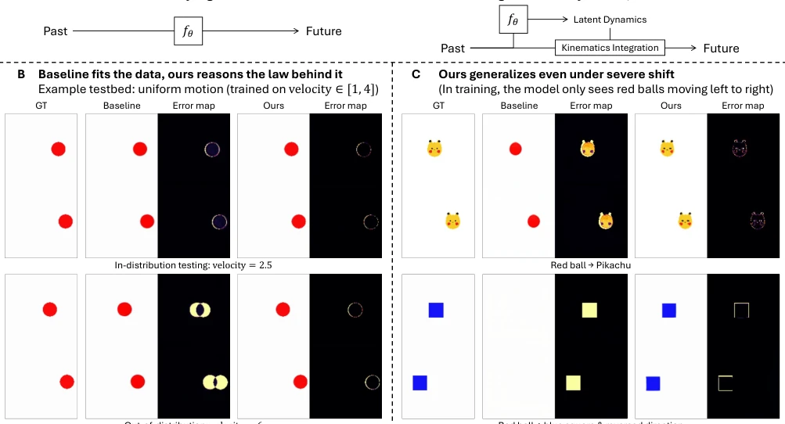
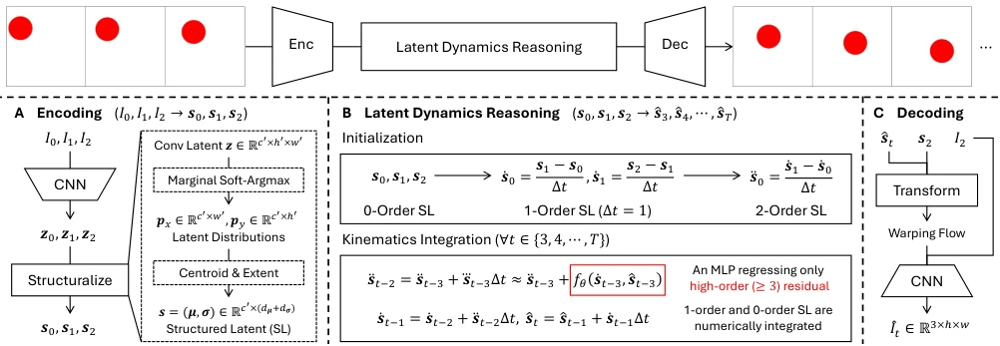
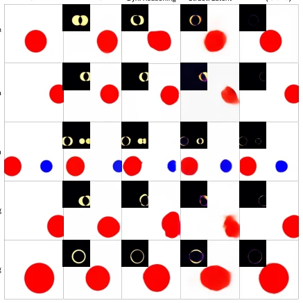
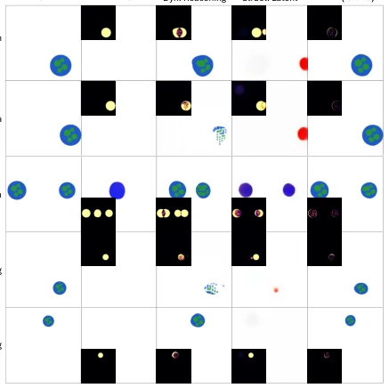
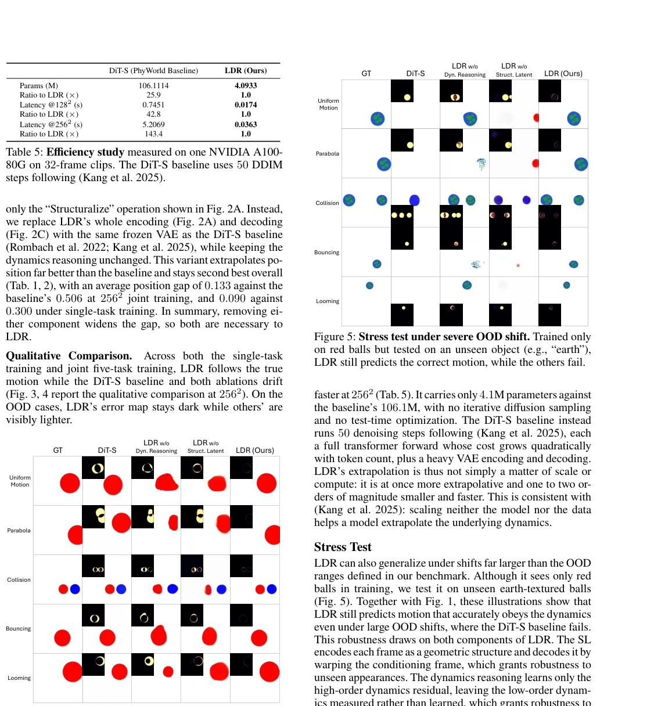

This paper pours cold water on video generation models that merely perform "pixel fitting": mere visual similarity is useless; one must understand physical laws! The authors developed a model named LDR, transforming video prediction from "guessing what the next frame looks like" to "calculating where the next frame should go." In simple physical simulations, LDR indeed trampled the baseline model (DiT), reducing OOD error by more than 20 times, and was ridiculously fast. But do not rush to praise; this model is currently merely a "physics class representative," only playing with red balls and blue cubes in simulation; once encountering complex textures or color changes in the real world, its "structured latent variables" that only grasp geometric structure might crash directly. After all, if it cannot even learn how colors change, what can be said about a general world model? This counts as mastering the "chicken-killing" skill before learning the "dragon-slaying" technique; there is still a distance to go before true embodied intelligence.
研究动机Motivation
现有的视频扩散模型（如DiT）和JEPA类模型（Bardes et al., 2024; Assran et al., 2025）虽然能生成逼真的视频，但它们本质上是“像素拟合者”，只学会了训练数据的分布，却不懂背后的运动规律。当测试场景超出训练分布（OOD）时，这些模型往往会退化，要么生成模糊的“平均脸”，要么完全违背物理常识（Kang et al., 2025）。真正的世界模型（World Models）应该像人类一样理解“世界如何演化”，即掌握动力学定律，从而在未见过的场景中进行准确的推演。然而，现有的基于神经ODE的方法（Chen et al., 2018; Park et al., 2021）大多仅在训练分布内验证，缺乏对动力学外推能力的系统性研究。本文旨在解决这一核心痛点：如何从纯像素中显式地学习并外推动力学，而非仅仅记忆像素序列。
Existing video diffusion models (such as DiT) and JEPA-like models (Bardes et al., 2024; Assran et al., 2025) can generate realistic videos, but essentially they are "pixel fitters," having only learned the distribution of training data, yet not understanding the underlying motion laws. When test scenarios exceed the training distribution (OOD), these models often degrade, either generating blurry "average faces" or completely violating physical common sense (Kang et al., 2025). True World Models should understand "how the world evolves" like humans, i.e., mastering dynamic laws, thereby enabling accurate deduction in unseen scenarios. However, existing neural ODE-based methods (Chen et al., 2018; Park et al., 2021) are mostly verified only within the training distribution, lacking systematic research on dynamic extrapolation capabilities. This paper aims to solve this core pain point: how to explicitly learn and extrapolate dynamics from pure pixels, rather than merely memorizing pixel sequences.

Figure 1: Learning how the world evolves. (A) Baseline method directly regresses the future, whereas our method regresses latent dynamics and reasons the future via kinematic integration. (B) Both match the ground truth (GT) in-distribution (ID), but only ours stays close to GT out-of-distribution (OOD). (C) Trained only on red balls moving left to right, LDR extrapolates the learned dynamics to a Pikachu and to a blue square moving right to left, while the baseline fails.
The core idea of LDR (Latent Dynamics Reasoning) is to model state transitions in latent space as explicit kinematic integration, rather than directly regressing future frames. The overall process is divided into three steps: first, the encoder maps input frames to structured latent variables (SL), extracting geometric coordinates (centroids and ranges) via edge softmax, stripping away redundant texture and semantic information; second, perform dynamics reasoning, using the SL of the first three frames to calculate first and second derivatives (velocity, acceleration) as initial states, the model only regresses third-order and higher-order residuals (i.e., rate of change of acceleration), then gradually deduces future SL through a numerical integration chain (second-order -> first-order -> zero-order); finally, the decoder uses the predicted SL and conditional frames to reconstruct future video frames through optical flow warping (warping). This architecture forces the model to learn the abstract laws of "how states evolve," rather than local features of "what the next frame is." The compactness of SL makes differentiation and integration operations more stable, while regressing only higher-order residuals allows the model to focus on capturing the essence of dynamic changes, thereby achieving robust extrapolation in OOD scenarios.

Figure 2: Overview of LDR. Given three conditioning frames I0, I1, I2, LDR predicts the future frames ˆI3, ˆI4, . . . , ˆIT in three stages. (A) LDR first encodes each input frame into a structured latent (SL). (B) LDR measures the low-order time derivatives of the given SL, then rolls out by regressing only the high-order residual with fθ and numerically integrating the lower orders to the next latent ˆst (t ∈{3, 4, · · · , T}). (C) LDR finally decodes each predicted latent to an RGB frame ˆIt.
Experiments are based on benchmarks built on the PhyWorld simulator, covering five physical tasks: uniform motion, parabola, collision, bounce, and approach. The baseline adopts DiT-S, comparing ablation variants removing dynamics reasoning and removing structured latent variables. Evaluation metrics directly extract position and radius errors of objects in predicted frames, focusing on examining the error gap between ID and OOD. Results show that at 256x256 resolution, LDR's ID-OOD error gap is more than 20 times smaller than DiT-S (23.9 times for single task, 27.7 times for multi-task), and parameter count is only 1/26 of the baseline, inference speed is 143 times faster. Ablation experiments prove that dynamics reasoning and structured latent variables are indispensable; removing either leads to a significant drop in OOD performance. Furthermore, in extreme OOD tests (e.g., training with red balls, testing with Pikachu or blue cubes), LDR can still accurately predict motion trajectories, while the baseline fails completely.

Figure 3: Qualitative OOD comparison under single-task training. For each task and each method, we show a predicted frame and its error map (darker is better). LDR stays close to the GT, while the baseline and both ablations drift.

Figure 5: Stress test under severe OOD shift. Trained only on red balls but tested on an unseen object (e.g., “earth”), LDR still predicts the correct motion, while the others fail.

Figure 4: Qualitative OOD comparison under joint five- task training. A single model holds all five tasks, yet LDR still stays close to GT while the others drift.